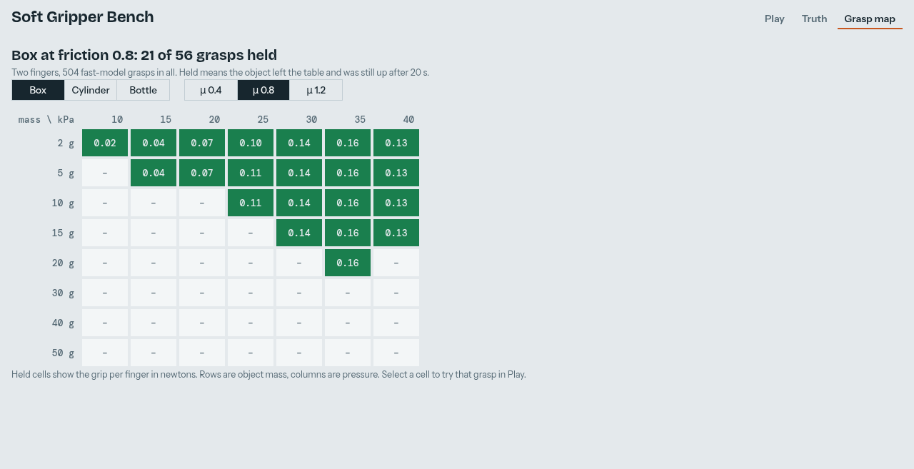
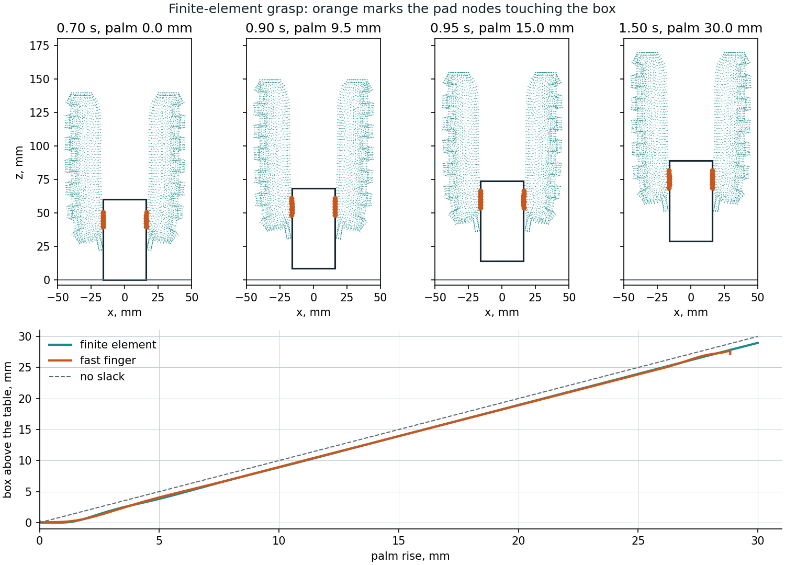
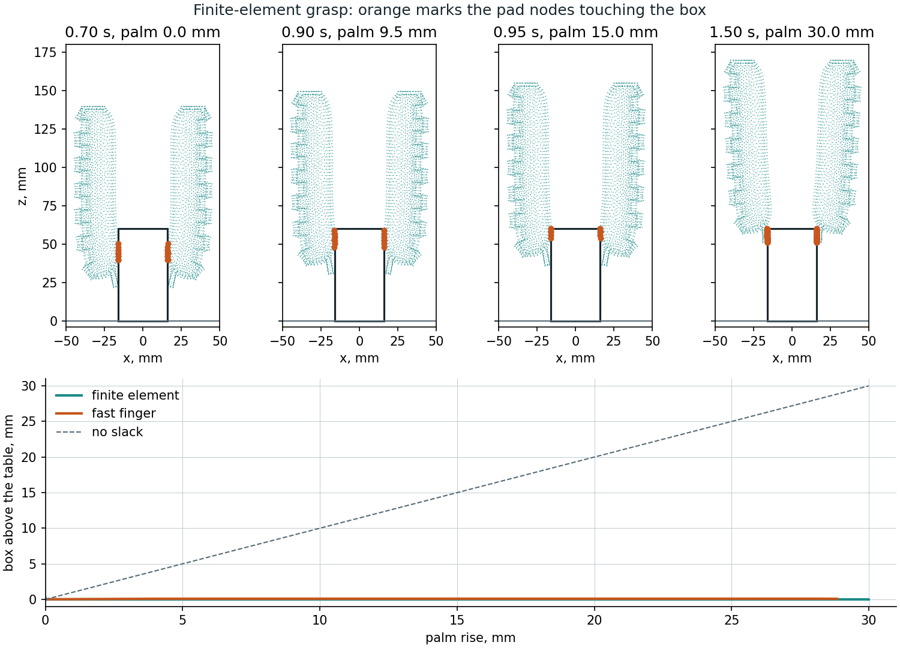

Soft gripper¶
A two-finger gripper built from the validated Wang finger, and a fast model of it that runs live on your own machine. The slow reference solver matches the measured finger to about 1°; it teaches a chain of links, and the chain runs faster than real time.
Play with it¶
xdg-open docs/viewer/gripper.html # or double-click it: no server, the physics is inside the file
python tools/demo_gripper.py --finger softsim/reduced/wang_finger.json # desktop version (MuJoCo viewer, sliders)
The page runs MuJoCo compiled to WebAssembly in your browser. Play has sliders for pressure, mass and friction, three objects, two to four fingers, and a live readout of grip against weight. Drag the object to push it. Truth replays a recorded finite-element grasp beside the fast finger on the same clock, with a time slider and jumps to the moments that matter. Grasp map shows which grasps hold; selecting a cell loads that grasp into Play. Only the page's fonts come from the network, and it falls back to system fonts offline.
The fast finger¶
softsim/reduced cuts the finger into 8 links, each with a hinge and a slide. Tables in pressure give each link's rest
angle and length, read from the reference's free-bend ramp. They are tables, not laws, because the pad stretches by a
third at 40 kPa and the bend falls back after 35 kPa. One stiffness per pressure, shared by all hinges, comes from
static tip loads on the reference (tools/probe_finger.py). softsim/reduced/wang_finger.json holds the result, and
the page and Python read the same tables and the same model text.
Errors of the fitted finger against the reference:
| Check | Used in the fit | Result |
|---|---|---|
| Free tip against the static shape, 5-35 kPa | no | 0.3-3.1 mm |
| Tip load, 5, 15, 25, 35 kPa | yes | 4-7% of the tip's movement |
| Tip load, 20 kPa | no | 5-7% (3.5-4.7 mm of 53-91 mm) |
| Load spread over the pads, 5-35 kPa | no | 9-27% |
The spread-load error is the model's known weakness: at 20 kPa the chain bends 17-22% too far, so one stiffness for the whole finger is too simple. Contact on the objects here is near the tip, where the tip-load figures apply.
Reproduce (the probes take about an hour on the RTX 3060):
python tools/probe_finger.py --pressures 5 15 20 25 35 --forces 0.1 0.2 --out runs/reduced/probes_static.json
python tools/fit_reduced_finger.py --ramp runs/media/wang/fem.npz --probes runs/reduced/probes_static.json \
--hold-out 20 --out softsim/reduced/wang_finger.json
runs/media/wang/fem.npz is the free-bend run written by tools/make_actuation_media.py.
What it can hold¶

tools/grasp_map.py runs 504 grasps: three objects, three frictions, eight masses, seven pressures; 107 hold (60 box, 23
cylinder, 24 bottle). Each grasp holds to 20 s. Held means the object ended at least 10 mm above where it started and sank less
than 1 mm over the last 0.2 s (softsim.scenarios.grasp.is_held, shared with the finite-element grasps). It is not a share of
the lift, because soft fingers can lose much of the lift before the object leaves the table. The finger is very
soft (0.2 N moves its tip about 90 mm), so this is a light gripper: the box grips at 0.16 N per finger at 35 kPa, and at
friction 0.8 two fingers can carry about 26 g. The map holds 20 g and drops 30 g, as that limit says it should.
Why 20 s. Stopping 2 s after the lift called 154 grasps held. tools/check_long_hold.py runs those on, and only 123 are
held at 10 s and 106 at 20 s: 60 of 61 box grasps, 23 of 46 cylinders and 23 of 47 bottles. One bottle grasp the short window
rejected holds at 20 s, which makes 107. Even a good box grasp sinks, at 0.40 mm/s for 10 g at 30 kPa, so 20 s also marks
down a grasp that creeps below 10 mm: the 30 g box at friction 1.2 and 35 kPa ends at 9.2 mm. That sink is MuJoCo's soft
friction creeping rather than the grasp slipping: raising impratio from 10 to 100 cuts it to 0.04 mm/s. The cylinder's fall
is not only creep: at impratio 100 it still falls, later.
Three things decided the layout:
- Palm height 140 mm. At 120 mm the lengthened fingers reach the table at 30-40 kPa and pinch objects at their base, so a cylinder tips over.
- More pressure is not always better. A 10 g cylinder at friction 0.8 holds at 20 and 25 kPa, and is back on the table by 10 s at 30 and 40 kPa. At 25 kPa and above even a 2 g cylinder falls by 20 s, so weight is not the cause. The cause has not been established.
- Fingers do not collide with each other in the fast model.
python tools/grasp_map.py --finger softsim/reduced/wang_finger.json --out runs/reduced/grasp_map.json
python tools/make_gripper_page.py --finger softsim/reduced/wang_finger.json --map runs/reduced/grasp_map.json
python tools/check_gripper_page.py docs/viewer/gripper.html --finger softsim/reduced/wang_finger.json --shots runs/page
python tools/grasp_map.py --finger softsim/reduced/wang_finger.json --end 3.5 --out runs/reduced/grasp_map_3p5s.json
python tools/check_long_hold.py runs/reduced/grasp_map_3p5s.json --finger softsim/reduced/wang_finger.json --out runs/reduced/long_hold.json
Against the finite-element grasp¶

The same grasp on the reference: 25 kPa, a 10 g box, a 30 mm lift, Coulomb friction 0.8 on both models. Two meshes: 2 mm and toothless, and the validated 1.5 mm finger with teeth (19 hours). Both ran with the default contact (a slip speed, decisions.md entry 6).
| FE, 1.5 mm with teeth, μ 0.8 | FE, 2 mm, μ 0.8 | Fast finger | FE, no-slip (earlier) | |
|---|---|---|---|---|
| Palm rise when the box leaves the table | 1.3 mm | 1.3 mm | 0.2 mm | 13.9 mm |
| Final rise of the box | 29.0 mm | 28.9 mm | 27.1 mm | 17.2 mm |
| Grip before the lift | 0.133 N | 0.122 N | 0.107 N | 0.170 N |
| Grip while holding | 0.113 N | 0.100 N | 0.092 N | 0.100 N |
held |
1 | 1 | 1 | 1 |
The two agree on how the grasp works, not only that it holds. The pads stay on the box's sides, the box leaves the table almost at once and follows the palm. Against the 2 mm run the grip is within 8% while holding and 12% before the lift; against the validated 1.5 mm finger the fast finger grips about 19% less (0.092 against 0.113 N while holding, 0.107 against 0.133 N before the lift). The fast finger's friction was not tuned to either run.
The earlier comparison was wrong, and why. The first finite-element grasps ran with no-slip contact while the fast finger
ran at 0.8: the backend takes the larger of the silicone card's friction (1.0) and the object's, and from STICK_MU = 1.0 up it
sticks, so object.friction had no effect. In those runs the fingertips pressed the box down, peeled off and re-gripped it at its
top corners. That was the no-slip contact, not the finger: with friction it does not happen. Real friction is set with the card,
body.material.friction.sliding, below 1.
The fast palm also stops 1.15 mm short of its target, sagging on its position actuator; ReducedGripper.palm_rise is
the real height.
python tools/run_fe_grasp.py --mass 10 --out runs/grasp/coulomb_10g_2mm.npz --checkpoint runs/grasp/coulomb_10g_2mm.ckpt.npz \
--set body.mesh.size=2mm --set body.geometry.finger.tooth_height=0 --set body.material.friction.sliding=0.8 # about 5 hours with other jobs running
python tools/plot_fe_grasp.py runs/grasp/coulomb_10g_2mm.npz --finger softsim/reduced/wang_finger.json --out docs/media/gripper_fe_grasp.png
python tools/run_fe_grasp.py --mass 10 --out runs/grasp/coulomb_10g_1p5mm.npz --checkpoint runs/grasp/coulomb_10g_1p5mm.ckpt.npz \
--set body.material.friction.sliding=0.8 # the validated finger: 19 hours on an i5-13500, alone
python tools/make_gripper_page.py --finger softsim/reduced/wang_finger.json --map runs/reduced/grasp_map.json \
--truth runs/grasp/coulomb_10g_1p5mm.npz --truth-label "1.5 mm mesh with teeth, friction 0.8"
python tools/check_gripper_page.py docs/viewer/gripper.html --finger softsim/reduced/wang_finger.json --truth runs/grasp/coulomb_10g_1p5mm.npz --shots runs/page
The first finite-element drop¶

The same grasp with a 30 g box, which the map drops. The finite-element fingertips slide up the box's sides to its top corners and the box never leaves the table; the fast finger lifts it 1.5 mm at most and puts it back. Both call it dropped.
| Finite element, 2 mm, μ 0.8 | Fast finger | |
|---|---|---|
| Final rise of the box | 0.001 mm | 0.08 mm |
| Grip before the lift | 0.122 N | 0.108 N |
| Grip while holding (the tips at the corners) | 0.074 N | 0.092 N |
held |
0 | 0 |
The hand check: grip is per finger, so two fingers at μ 0.8 and 0.122 N carry 2 × 0.8 × 0.122 = 0.195 N, which is 19.9 g. The 10 g box is under that and held, the 30 g box over it and dropped, on both models. This is one grasp on each side of the limit, on a coarse mesh, so it checks the map's boundary for the box at 25 kPa, not everywhere.
python tools/run_fe_grasp.py --mass 30 --out runs/grasp/coulomb_30g_2mm.npz --checkpoint runs/grasp/coulomb_30g_2mm.ckpt.npz \
--set body.mesh.size=2mm --set body.geometry.finger.tooth_height=0 --set body.material.friction.sliding=0.8 # about 2.7 hours
python tools/plot_fe_grasp.py runs/grasp/coulomb_30g_2mm.npz --finger softsim/reduced/wang_finger.json --mass 30 --out docs/media/gripper_fe_drop.png
Mesh error. With friction (μ 0.8, the default slip speed) the 1.5 mm finger with teeth grips 13% harder while holding
than the 2 mm toothless one (0.113 against 0.100 N) and 9% harder before the lift (0.133 against 0.122 N); the lift-off
(1.3 mm of palm rise), the final rise (29.0 against 28.9 mm) and held are the same. The earlier no-slip pair showed the
same 12% (0.112 against 0.100 N). Take about 13% as the uncertainty of a 2 mm grip. It is the teeth and the mesh together,
since the two runs differ in both. The 2 mm numbers equal those of the earlier run with the old friction smoothing to the
digits shown, so the slip speed does not change this grasp.
The Truth tab draws the finger's side face. Contact is usually mid-width, where the cavity bulges the pad past that face, so a marked node can sit in a gap between the drawn finger and the box. The fast finger there gets the same pressure schedule and is asked for the same palm path, but its palm follows about 6 mm behind during the lift.
Checks¶
tools/check_gripper_page.pyopens the page from disk in headless Chrome, fails on any script error, and runs four scripted grasps in both the page and Python. The largest gap is 0.16 mm, although the page's MuJoCo is an older build (WebAssembly 3.1.16). It ran at about 8x real time with software graphics and two FE runs on the machine.tests/test_reduced_finger.py: tables recover an exact arc, a small tip load matches the hinged cantilever by hand, the fit recovers a known stiffness, MuJoCo agrees with the static balance, and a mass under the friction limit rises while one over it stays. Mutations of the load direction, the spread load, the object's friction and the held metric each fail a test.tools/check_gripper_page.py --truthcompares the tab's decoded nodes with the run file (worst 0.005 mm, the storage step) and its readouts with both models.tests/test_truth_data.pychecks the packing, the chapters and the schedule.tools/rehearse_gripper_demo.pypresses the buttons the demo script names and fails if a beat ends differently, or if Play's lift stops starting at 1.5 s, where the map's does. It found Play lifting 0.6 s early, so a loaded map cell was a different grasp; that is fixed.tests/test_grasp.py: two fingers are exactly two of the finger, they curl inwards, and held and slip mean what they say.
Limits¶
- The 10 g finite-element grasps were re-run with the friction default (a slip speed,
decisions.md, entry 6) on 2026-11-13 and give the 2 mm numbers of the earlier run. The 30 g drop above
predates it: re-run with the default, the 2 mm 30 g grasp stops converging at t = 1.04 s, during the lift (Newton fails
even with 0.6 ms substeps; the checkpoint at sample 104 of 150 is kept,
runs/grasp/coulomb_30g_2mm.ckpt.npz). Its dropped-box numbers are therefore from the old smoothing (--set contact.slip_speed=null). - Held on the map means held at 20 s, not indefinitely, and every grasp is still creeping then (see above).
- The map is the fast model's prediction. Two coarse finite-element grasps check it, the box at 25 kPa held at 10 g and dropped at 30 g, as the map says. Every other cell, and the cylinder and bottle entirely, are unchecked.
- Nothing here reproduces a physical grasp, and the grip is the conservative case. Wang et al. measured a tip force of 0.47, 0.77 and 0.96 N at 20, 30 and 35 kPa (Table 7, not used in any fit here) and showed four fingers holding objects up to 364 g, in single demonstrations with pressure unrecorded. The validated finger with its tip sliding on a gauge pushes 0.085, 0.146 and 0.165 N; with its tip stuck to it, 1.04 N at 20 kPa and 1.19 N at 30 kPa: the measurement lies between, and the paper doesn't record the contact, so the force cannot check the model (docs/actuation.md). The fast finger is fitted to the sliding case: it grips at 0.16 N per finger at 35 kPa and carries about 26 g on two fingers. Its held and dropped limits are the model's, not the real gripper's.
- The chain does not deform around an object.
- Two fingers are the fitted case. Three and four fingers on the page are extrapolations, and the validated finger is plane strain, so FE grasps can only be two fingers.
- In FE grasps the table is a one-way frictionless support under the object's centre of mass (
RigidBody3D.floor): it stops the object sinking, but not tipping, and the object cannot slide against it. The reference also has no finger-to-finger contact or self-collision. - SOFA is not used: 8.14° RMS on the finger at 1 mm and no browser build (
docs/decisions.md).